THIS IS ME PROJECT
Z-AXIS
ABOUT OPUS
CONCEPT
プロジェクトの「THIS IS ME」というテーマについて、
今までの自分自身を振り返りながら創作する。
今は使っていない様々なジャンルの私物を組み合わせ形作っていくことで、
自分自身の歴史や人生観を表現する。
様々な要素が交わり合うことで自分のアイデンティティなどを表現する。
WHAT IS "Z軸"?
人は、時間(X軸)と好きなもの(Y軸)が交差した平面的な存在じゃない。
そこには経験や感情が積み重なった「厚み」、
つまり『Z軸』がある。
そして、私たちが『Z世代』と呼ばれること。
その複雑な世代性。
２つの意味を込めたのが、この作品『Z軸』。
技法
アクリル絵具、油性マーカー、毛糸、既製品
（ガチャガチャ、キーホルダー、アクセサリー、衣類、CDケース等）
を使用したミクストメディア。
主に、今は使わなくなってしまったものたちをかき集め、
「THIS IS ME」を表現。
キャンバスを土台に、様々なオブジェクトをコラージュ、
アッサンブラージュの技法で構成。
FRONT SIDE(外側の自己)
作品の表面は、他者からも見える「私」。
頭の中を埋め尽くす好きなモノの混沌（ラーメン丼）、
実際に着ていた服で創作した身体部分、
完璧じゃない自分を表現したディテール（タグなど）。
アクティブな私らしさを表現。
BACK SIDE(内側の自己)
作品の裏面は、他者からは見えない「私」の内面。
中学時代に聴き続けたCDケースの中に詰め込んだ故郷の記憶。
パーソナルで、内省的な心の奥を表現。
PROCESS
-
STEP 1
アクリル絵具を使用し、青と緑を基調とした背景をキャンバスに描く。
▼創作の原点▼
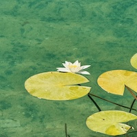
中学生の時に初めて美術館でモネを見てインスピレーションを受けたのが、 始まり。
中学生の時に美術館で出会い、 強烈なインスピレーションを受けたモネの絵画。 自身のルーツである「絵を描くこと」で、 その初期衝動を表現した。 -
STEP 2
白いお椀の周囲に、赤い油性マーカーで雷紋を手描き。
▼アイデンティティの一部▼
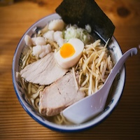
中学時代からのソウルフードであるラーメンは、 欠かせない要素。 -
STEP 3
お椀の中に、麺に見立てた黄色い毛糸を入れる。
▼既成概念からの解放▼
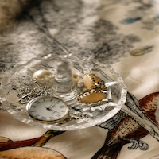
本物を使うのではなく、 温かみのある毛糸という異素材で「麺」を表現することで、 自分らしいユニークな視点を加えた。 -
STEP 4
お椀の中の毛糸の上に、
ミニチュアの玩具やキーホルダーをラーメンの「具」に見立て、
グルーガンで接着。
▼記憶の断片化▼
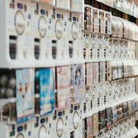
一つ一つのガチャガチャは、 その時々の私の「好き」や熱中したことの記憶。 それらを具材として載せることで、 自身の歴史そのものを可視化した。
うにが苦手なので隠すような配置にして下に埋め込んだ。 -
STEP 5
背景を描いたキャンバスに穴を開け、
お椀を上部に挿入・固定。
▼脳内の具現化▼
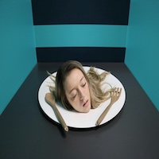
制作したラーメン丼は、 アイデアの源泉である自身の「頭部」。 私の脳内が、 好きなものや今までの歴史を表現している。 -
STEP 6
お椀の下に、
ネックレスを首の形に丸めてグルーガンで接着。
▼「好き」による自己形成▼
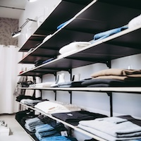
頭部（脳）と身体を繋ぐ首に、 愛用ブランドである 「WHO'S WHO gallery(フーズフーギャラリー)」 のアクセサリーを使用。 その「頭部」と「体」を繋げる 「首」の要素として接着。 -
STEP 7
実際に着ていた服を「身体」として立体的に構成。
裁断した黒い衣服を、
内部に切れ端を詰めて立体感を出しながら、
身体としてキャンバスに接着。
▼自己の投影▼
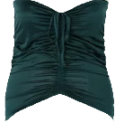
実際に着用していた「JENASIS」の服を 「身体」として使うことで、 作品にリアルな自分自身を投影。 内部に切れ端を詰めたのは、 外面からは見えない厚み（Z軸）を 物理的に表現するため。 -
STEP 8
衣服から切り取ったブランドタグを、
キャンバスの端に接着した。
服のタグをあえて見える位置に貼り、
おっちょこちょいな一面を表現。
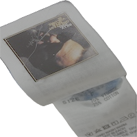
▼欠点の肯定▼
通常は隠す「タグ」をあえて見せることで、 完璧ではない自分のおっちょこちょいな一面を 肯定的に表現した。 完璧ではないところも、私の一面。 -
STEP 9
ラーメンのキーホルダーを
「見える臓器」として身体に接着。
身体に見立てた衣服の上に、
ラーメンのミニチュアキーホルダーを接着。
▼エネルギー源の可視化▼
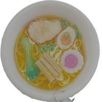
「自分の身体はラーメンでできている」 という感覚を、 「見える臓器」として具現化した。 -
STEP 10
「GRAND GARAM」という銘柄のタバコの箱を接着。
▼個性の象徴▼
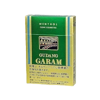
-
STEP 11
余った隙間を金具で埋め尽くし、
マキシマリストな自分を表現。
▼マキシマリストの美学▼
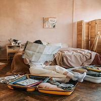
モノで溢れている自身の性質を表現するため、 余白を徹底的に埋め尽くした。 -
STEP 12
キャンバスの全ての側面にデコシールを貼り、
隙間を切れ端で埋める。
▼日常とアートの融合▼
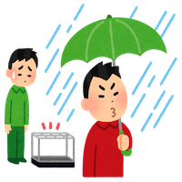
傘の盗難防止という日常のサバイバル術も、 自分を形成するユニークな要素として作品に取り込んだ。 -
STEP 13
メインキャンバスの裏側に、
一回り小さいキャンバスをグルーガンで接着。
▼内面世界の入り口▼
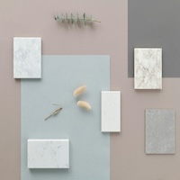
作品の裏側は、 他者からは見えない「内面」を表現するための、 もう一つの舞台である。 -
STEP 14
裏面のキャンバスを、
黒のアクリル絵具で塗装。
▼深層心理の色▼
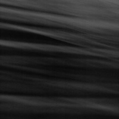
黒という色は、 「他の色に左右されない・様々な色が組み合わさってできている」 という面から、 自分自身にも当てはまる特性だと思い、 黒い背景に。 他の色に左右されないというのは、 自分自身の好きなことをしたり、 自分の意見を持ったりすること。 様々な色が組み合わさってるというのは、 好奇心旺盛で、 色々な体験をしてきたということ。 -
STEP 15
「変身、成長、美しさ、自由、魂、幸運」
の象徴である蝶の絵を模写し、
黒いキャンバスの上に描く。
▼消えないアイデンティティ▼
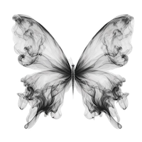
自分のアイデンティティの一つ。 -
STEP 16
蝶の絵の周囲に、
造花の花びらを外側から接着。
▼心象風景▼
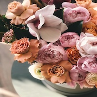
幼い頃から好きだった花は、 蝶（アイデンティティ）と密接に結びつく、 心の中の原風景である。 -
STEP 17
裏面キャンバスの下半分に、
CDケースをそのまま接着した。
中学時代の思い出のCDケースを
「記憶装置」として接着。
▼記憶のタイムカプセル▼
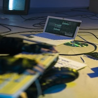
今は使われなくなったCDケースは、 過去の記憶を封印した媒体。 風化していくメディアに、 自身の歴史を重ね合わせた。 -
STEP 18
CDの歌詞カードを切り取り、
作品の表面・裏面の各所にコラージュ。
▼思考の断片▼
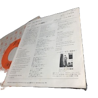
音楽や歌詞もまた、 私の思考や感情（Z軸）を形成する 重要な要素であることを示している。 -
STEP 19
CDケースの内部に、
モネの絵画が印刷された便箋を貼り付ける。
▼ルーツの在り処▼
記憶のタイムカプセル（CD）の中に、 自身の原風景（故郷）と創作の原点（モネ）を 忍ばせることで、 心の奥にあるルーツを表現した。 -
STEP 20
蝶の絵と花びらの境界線を、
カラーセロファンで縁取るように接着。
▼インスピレーションの積層▼
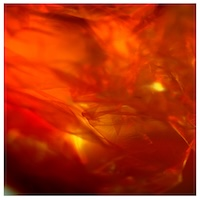
過去に影響を受けたアーティスト （オラファー・エリアソン）の作品の一つの記憶もまた、 今の私を形成している要素の一つとして取り入れた。 -
STEP 21
作品の全ての表面を、
仕上げにニスでコーティング。
▼混沌の統合▼
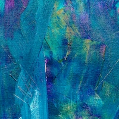
これまで表現してきた、 表も裏も、過去も現在も、 ポジティブもネガティブも含む全ての要素を、 ニスで塗り固めることで 「これが今の私である」と統合し、 肯定する行為。
GALLERY
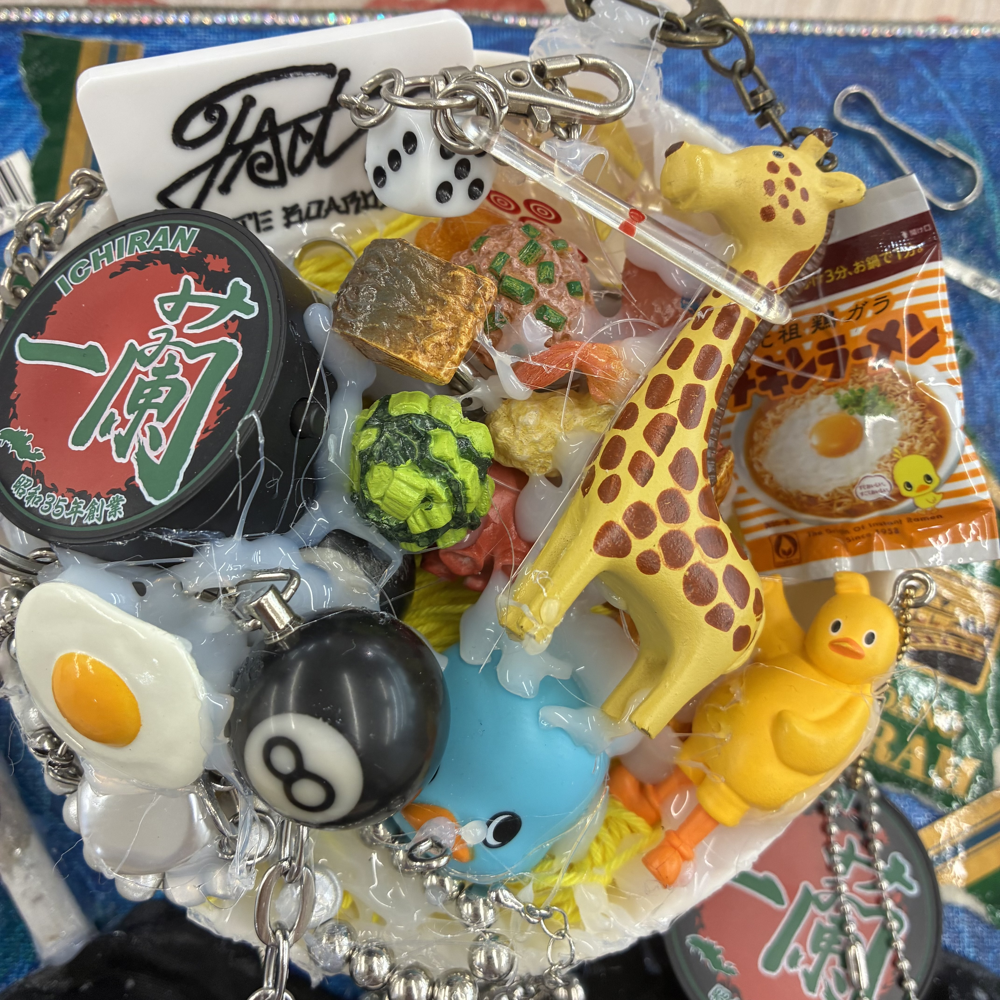
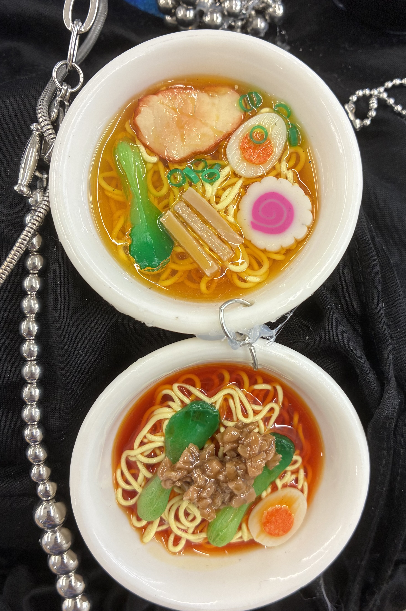
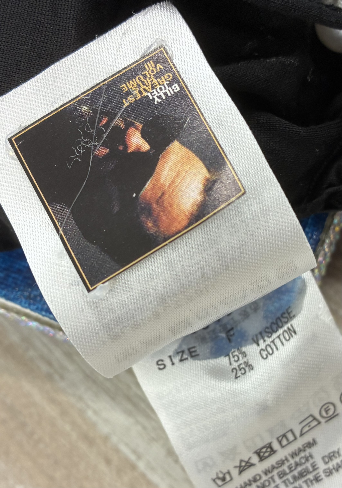
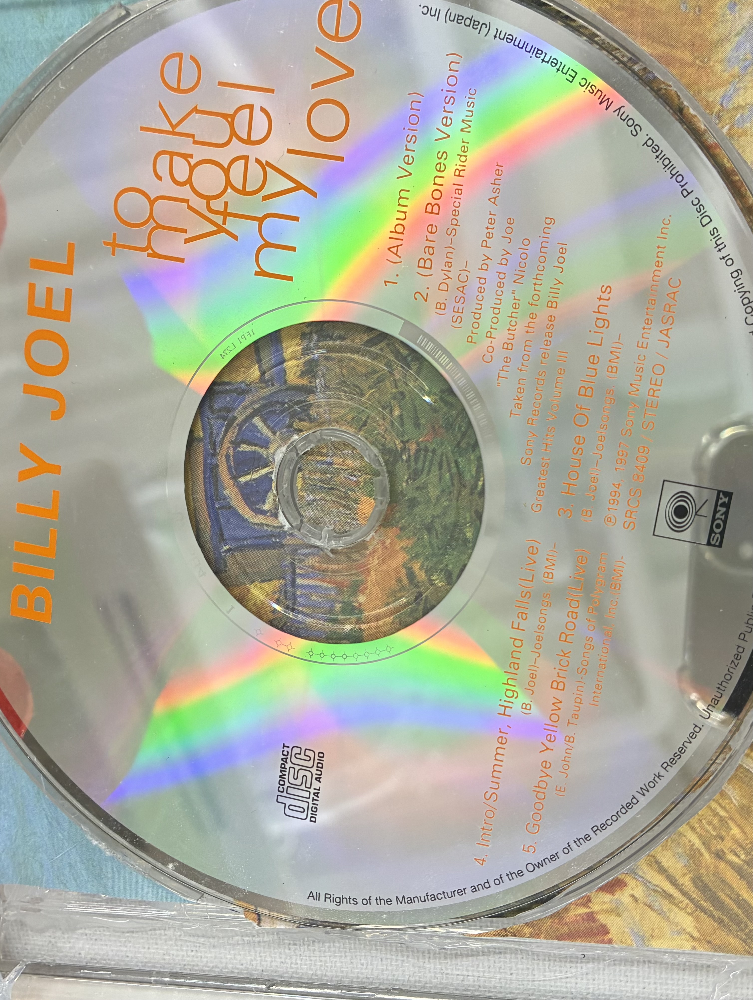
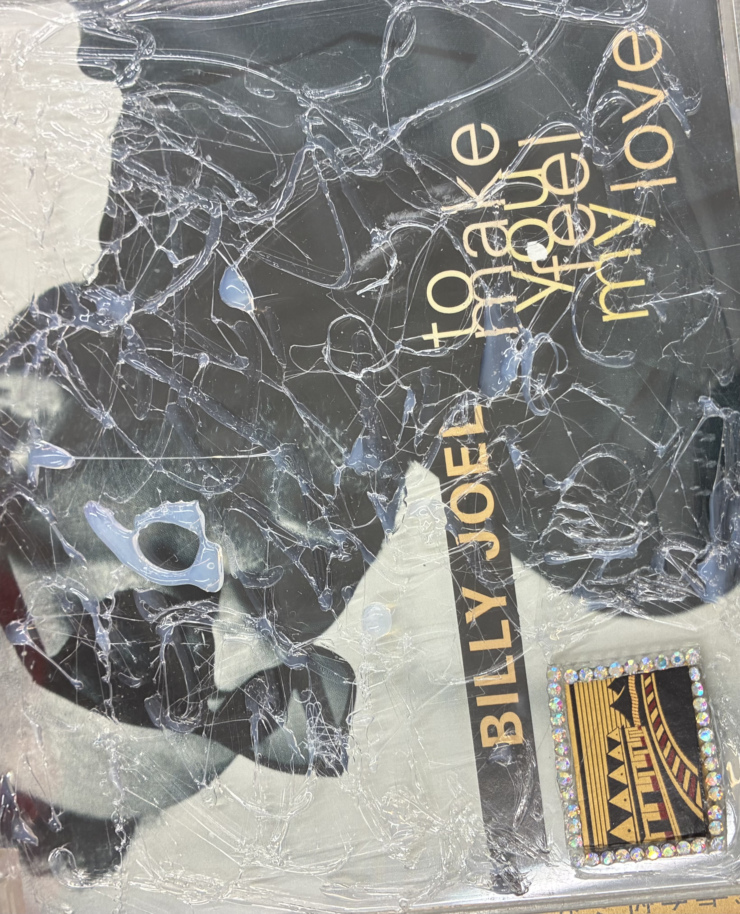
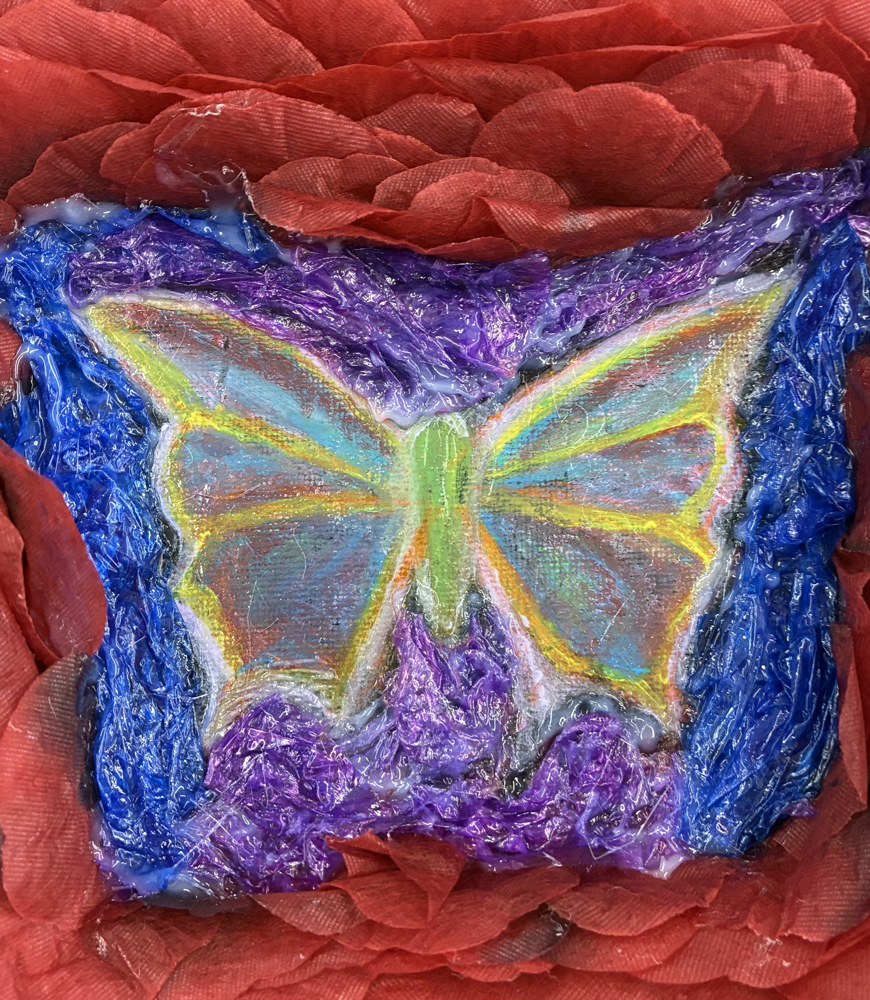
CONTACT
作品に関するお問い合わせや、 その他のご連絡はインスタグラムのDMまでお願いします。
楽しいことも、好きなことも、ちょっと変なクセも、
過去の思い出も、全部を表現。
今ではガラクタになってしまっているものを中心に、
形ある媒体として、様々な素材のアイテムを活用し、
「自分自身」を3D化。
これが、私の『Z軸』であり、THIS IS ME。
今の自分を形作ってきた過程の一部を表現。